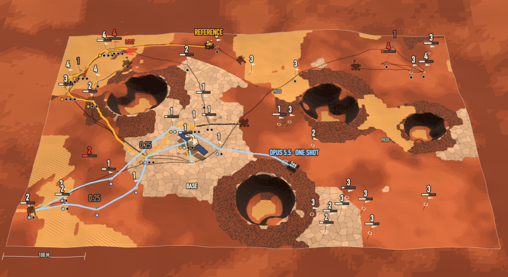

Bring the
samples home.
Eight autopilots cross the same terrain. Follow their routes, watch their batteries, and see who makes it back.
The sun recharges the rover.
Every command arrives three ticks late.
World 2027 is ready to watch.

Explore this terrain
Other worlds
Choose your own world
Same eight autopilots, a different patch of ground.
Who’s driving?
One reference planner, one textbook controller and six Claude-written programs. Each drives its own rover for a 420-tick mission.
The model-written programs are saved and replayed on each world.
- Our planner1 rover
- Plans the whole route against the battery and the sun.
- Textbook A* + Kalman1 rover
- Finds the cheapest path, then takes the best next target.
- Claude, one request3 rovers
- Autopilots that Opus, Sonnet and Haiku each wrote in a single answer.
- Claude, agent runs3 rovers
- Autopilots that Opus and Sonnet agents wrote during a mission.
What to look for in the featured worlds
- World 2027Judged site 1. Two of Claude’s three agent autopilots run their batteries flat.
- World 2028Judged site 2. The closest race: 0.457 against our planner’s 0.508.
- World 2029Judged site 3. Three Claude rovers run their batteries flat.
- World 871Opus agent 3 holds 19 samples. Then its battery dies.
- World 610Our planner brings 28 samples home. Two Claude rovers die by tick 166.